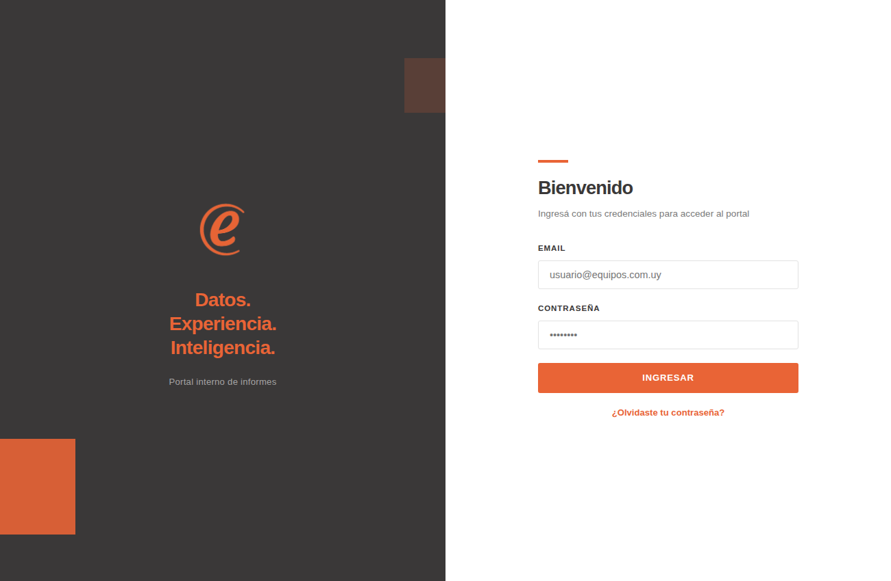
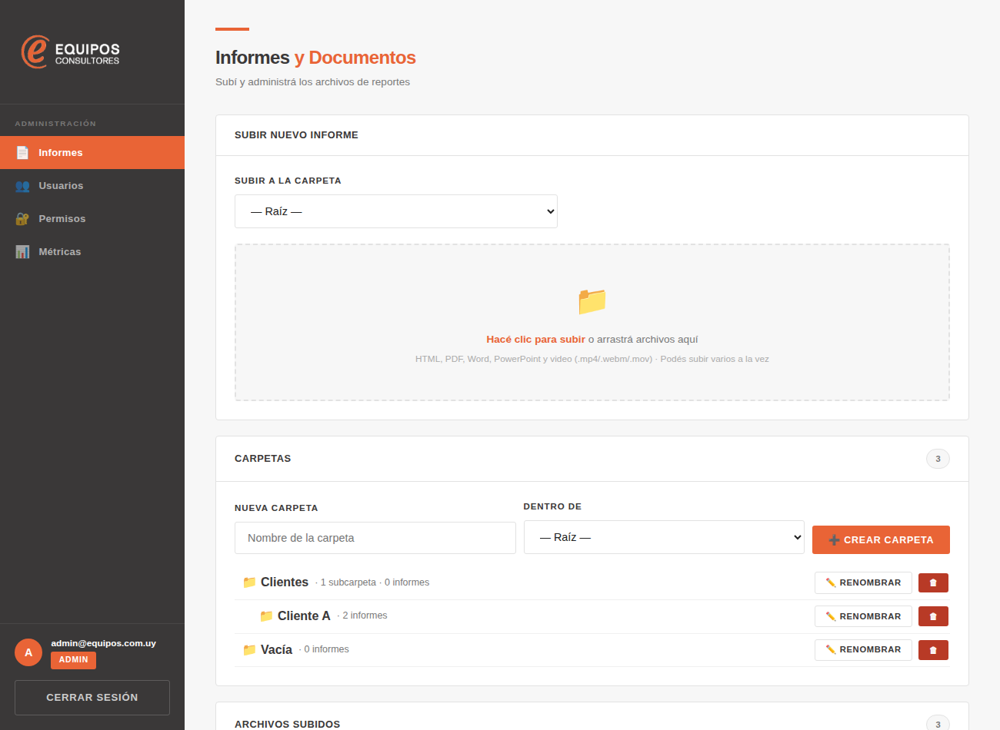
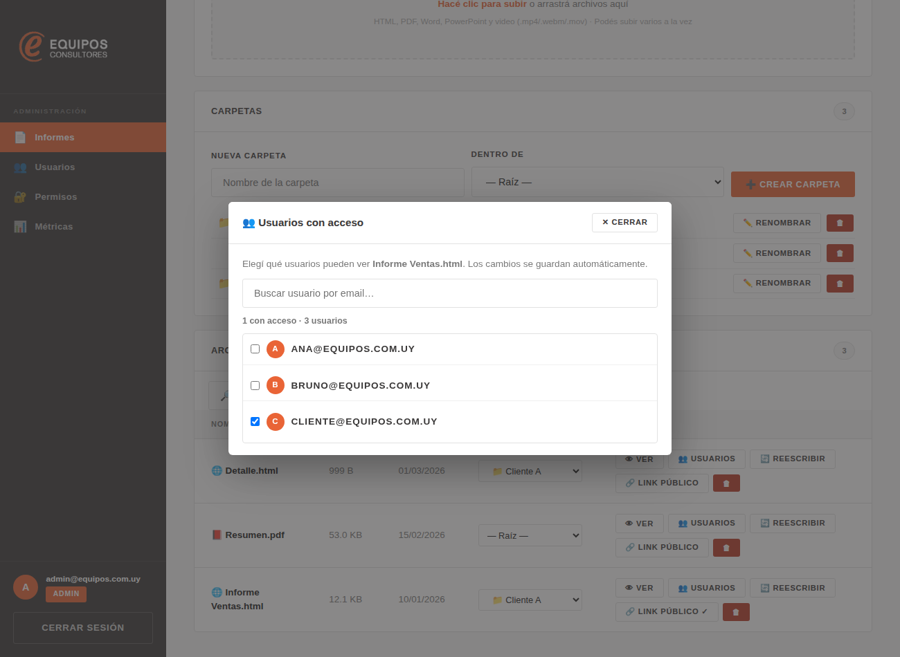
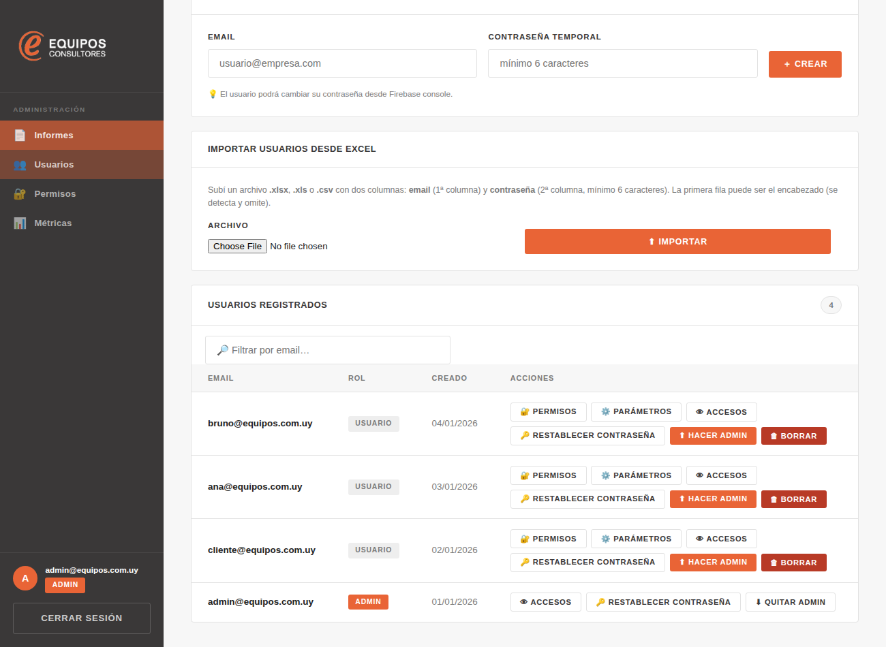
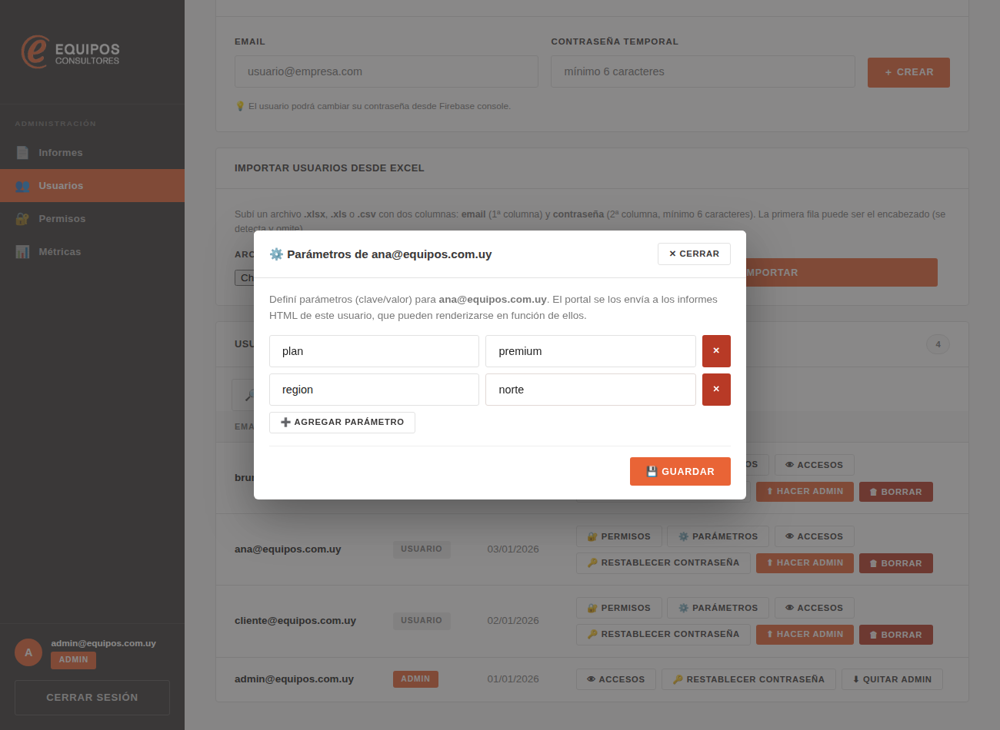
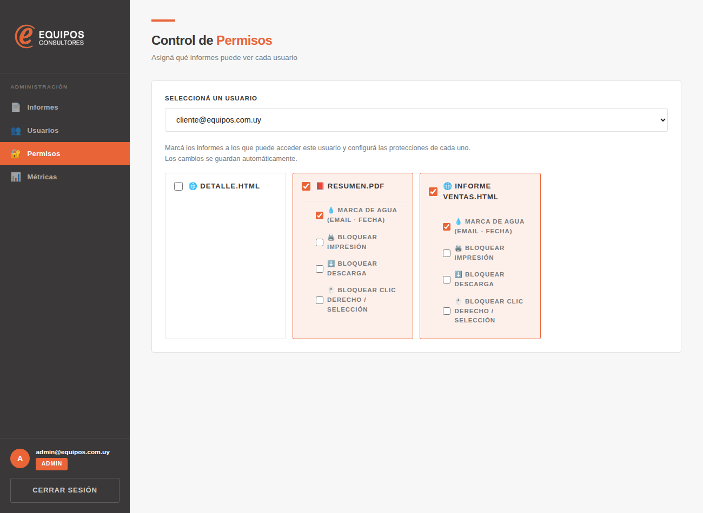
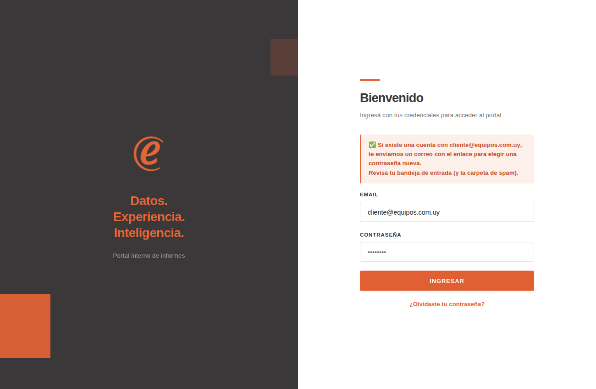
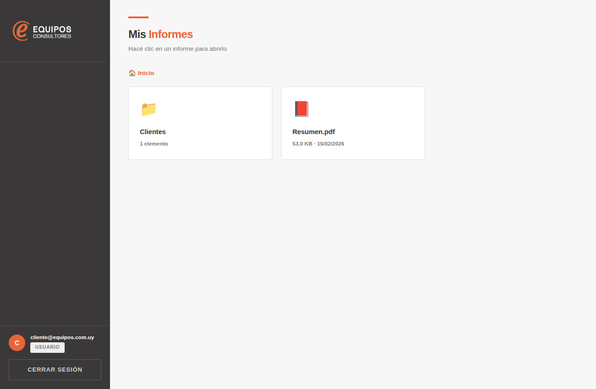
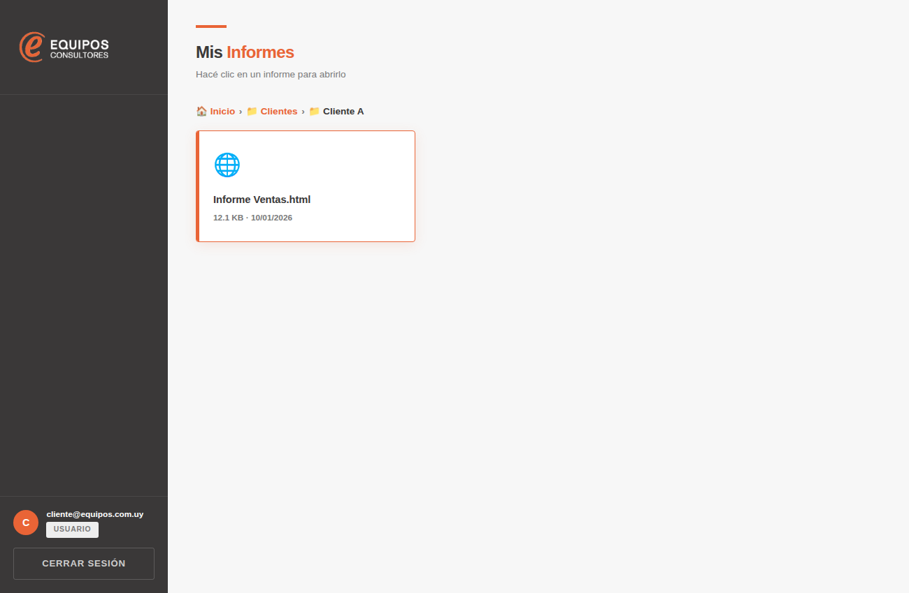
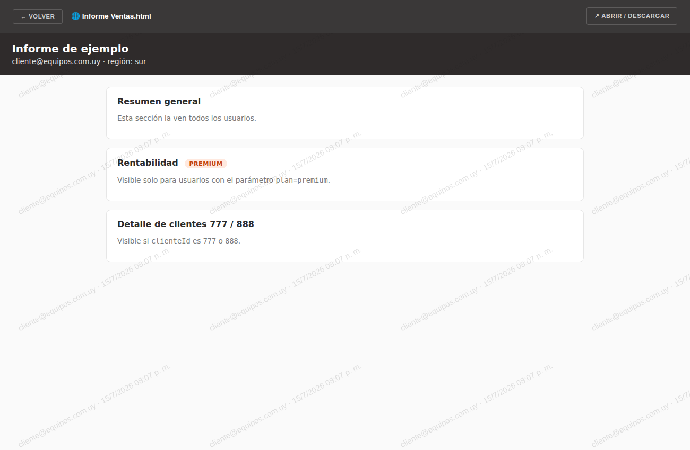

Portal de Informes — guía para Administrador y Cliente
Documento interno
El Portal de Informes permite subir informes y documentos (HTML, PDF, Word, PowerPoint y video) y
controlar qué usuario puede ver cada uno. Tiene dos roles:
Administrador: sube y organiza informes, crea usuarios, asigna accesos, configura protecciones y ve métricas.
Cliente: ingresa y ve, dentro de carpetas, solo los informes que se le asignaron.
Parte 1 · Administrador
1. Ingresar al panel
Abrí la dirección del portal e ingresá con tu email y contraseña de administrador. Si iniciás sesión con un
usuario que tiene rol admin, verás el panel de administración; si no, verás la vista de cliente.

Pantalla de ingreso. El enlace «¿Olvidaste tu contraseña?» envía un correo de recuperación.
2. El panel de administración
El menú lateral tiene cuatro secciones:
Informes — subir, organizar en carpetas, actualizar y compartir documentos.
Usuarios — crear/importar usuarios y administrar sus accesos.
Permisos — asignar, por usuario, qué informes ve y con qué protecciones.
Métricas — accesos al portal y uso de los dashboards.
3. Subir un informe
Entrá a Informes.
Si querés ubicarlo dentro de una carpeta, elegila en «Subir a la carpeta» (por defecto va a la raíz).
Arrastrá el archivo a la zona de subida o hacé clic para elegirlo. Podés subir varios a la vez.
Formatos soportados: HTML, PDF, Word (.doc/.docx), PowerPoint (.ppt/.pptx) y video (.mp4/.webm/.mov…).

Sección «Informes»: zona de subida, carpetas y la tabla de archivos subidos (con buscador por nombre).
4. Organizar en carpetas
En la tarjeta Carpetas podés crear carpetas (incluso anidadas) para ordenar los informes:
Escribí el nombre en «Nueva carpeta», elegí opcionalmente una carpeta padre en «Dentro de» y tocá Crear carpeta.
Para mover un informe, usá el selector de la columna Carpeta en la tabla de archivos.
Cada carpeta se puede Renombrar o Borrar. Al borrar una carpeta con contenido, sus subcarpetas e
informes se mueven a la carpeta padre — no se borra ningún informe.
El cliente ve una carpeta solo si dentro (a cualquier nivel) tiene algún informe asignado a él.
5. Reescribir (actualizar) un informe
El botón 🔄 Reescribir de cada fila permite reemplazar el contenido de un informe ya
cargado subiendo un archivo nuevo, conservando el mismo informe (sus permisos, accesos y enlace público).
El archivo nuevo debe ser del mismo tipo (una web HTML se reemplaza con HTML, etc.).
Si el informe tenía un enlace público, se actualiza automáticamente para que siga funcionando.
6. Enlace público
Con 🔗 Link público generás un enlace que permite ver ese informe sin iniciar sesión,
desde cualquier navegador. Podés copiarlo, abrirlo, ver cuántos accesos tuvo y desactivarlo cuando quieras.
Cualquiera con el enlace puede ver el informe. Usalo solo para material que pueda ser público.
7. Asignar usuarios a un informe
Desde la propia lista de informes, el botón 👥 Usuarios abre un diálogo para elegir
qué usuarios pueden ver ese informe, con una lista filtrable por email. Los cambios se guardan solos.

Diálogo «Usuarios con acceso»: buscá y marcá los usuarios que pueden ver el informe.
8. Gestión de usuarios
En Usuarios podés crear cuentas de a una (email + contraseña) o importar desde Excel
(columna 1 = email, columna 2 = contraseña). La tabla tiene un buscador por email y, en cada usuario, estas acciones:
🔐 Permisos — ir a asignarle informes (ver punto 10).
⚙️ Parámetros — valores por usuario para los informes HTML (ver punto 9).
👁 Accesos — ver qué informes tiene asignados.
🔑 Restablecer contraseña — le envía un correo (en español) para elegir una nueva.
⬆ Hacer admin / ⬇ Quitar admin — cambiar el rol.
🗑 Borrar — elimina el usuario y sus permisos del portal.

Sección «Usuarios»: creación, importación desde Excel y tabla con buscador y acciones.
Al borrar un usuario se elimina su registro y sus permisos, pero su credencial (email/contraseña)
queda en Firebase Authentication. Para eliminarla por completo — y poder reutilizar ese email — borrala también en
Firebase Console → Authentication.
9. Parámetros por usuario
El botón ⚙️ Parámetros permite definir, por usuario, pares clave/valor
(por ejemplo clienteId = 777, region = norte, plan = premium). El portal se los
envía a los informes HTML de ese usuario, que pueden renderizarse en función de ellos.

Parámetros de un usuario: agregá los pares clave/valor y guardá.
10. Permisos y protecciones
En Permisos elegís un usuario y marcás los informes a los que puede acceder. Por cada informe asignado podés
activar protecciones:
💧 Marca de agua — estampa el email del usuario + fecha/hora sobre el documento.
🖨 Bloquear impresión.
⬇ Bloquear descarga.
🖱 Bloquear clic derecho / selección.
Los cambios se guardan automáticamente. (Esto mismo se puede hacer, más rápido para un informe puntual, con el
botón «Usuarios» del punto 7.)

Sección «Permisos»: informes asignados a un usuario y las protecciones de cada uno.
Las protecciones son disuasivas, no infalibles: en una web no se puede impedir una captura de
pantalla. La más efectiva es la marca de agua, que deja rastro de quién vio el documento.
11. Métricas
En Métricas se registra cada acceso al portal: quién ingresa, cuántas veces, por cuánto
tiempo y desde qué IP. También hay «Analítica de dashboards»: por informe, qué pestañas/secciones usan los
clientes (visitas y tiempo).
12. Informes HTML dinámicos avanzado
Un mismo informe HTML puede mostrar contenido distinto según el usuario, usando los parámetros del punto 9.
Hay dos usos:
Personalizar datos: el HTML recibe email, uid y los params del usuario y
filtra/arma su vista con ellos.
Mostrar/ocultar secciones sin programar: marcando cada sección con data-portal-show="region=norte"
o data-portal-hide="…".
El detalle técnico, el bloque a pegar en cada HTML y un ejemplo funcional están en el README del
repositorio y en examples/dashboard-parametros.html.
Parte 2 · Cliente
1. Ingresar y recuperar contraseña
Ingresá con el email y la contraseña que te dio el administrador. Si no la recordás, tocá
«¿Olvidaste tu contraseña?», escribí tu email y recibirás un correo con un enlace para elegir una nueva
(revisá también la carpeta de spam).

Recuperación de contraseña desde la pantalla de ingreso.
2. Ver mis informes y carpetas
En «Mis Informes» ves las carpetas y los informes que te asignaron. Hacé clic en una carpeta para
entrar y ver su contenido; usá las «migas de pan» (🏠 Inicio › Carpeta › …) para volver.

Vista del cliente: carpetas e informes asignados.

Dentro de una carpeta, con la ruta de navegación arriba.
3. Abrir un informe
Hacé clic en un informe para abrirlo dentro del portal: los PDF, Word, PowerPoint, HTML y video se ven
directamente, sin descargar. Según lo que haya configurado el administrador, el documento puede mostrar una
marca de agua con tu email y fecha, o tener bloqueadas la impresión, la descarga o el clic derecho.

Un informe abierto en el visor del portal (con marca de agua).